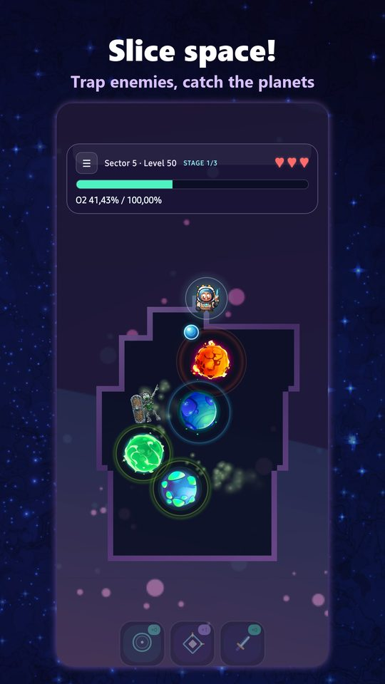
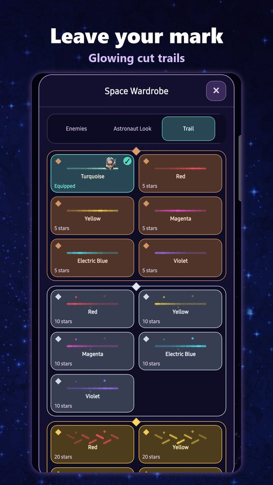
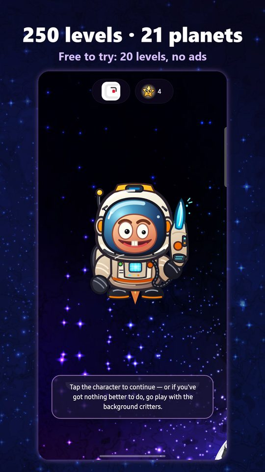

Make the cut
Find a clear path between moving enemies.
 Creacet SoftwareAll projects
Creacet SoftwareAll projectsSpace Slice Puzzle
Draw a slice through open space. Keep the meteors on one side and claim a little more of the planet with every cut.


Find a clear path between moving enemies.

Choose the trail that follows your next slice.

Work your way through 21 planetary worlds.